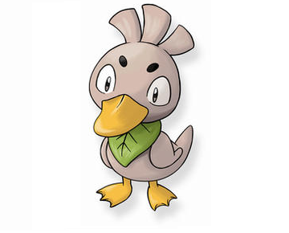
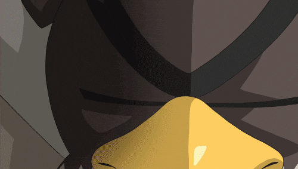

Lewuck
Ele é um pato de pelo marron claro, com uma folha verde amarrada como um lenço no pescoço, ele é ágil e rápido usando suas asas para fazer manobras impressionantes no ar.

Farfetch´d
É um Pokémon do tipo Normal/Voador, ele é conhecido por carregar um alho-poró, que usa como uma espada em batalhas. Farfetch'd tem uma aparência de pato marrom com asas que se assemelham a mãos. Ele é um Pokémon raro e muitas vezes é visto como um símbolo de sorte, ele é ágil e habilidoso utilizando seu alho-poró tanto para atacar quanto para se defender.